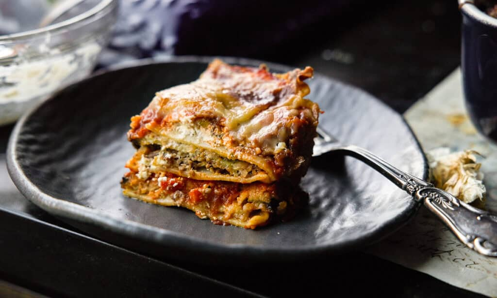

Lasagna

Description
A delicious vegan lasagna made with Impossible grounds, vegan cheeses, and a homemade tomato sauce.
Though a labor of love, it makes enough to feed a small crowd (or to have leftovers for days) so the effort is well worth it!
Ingredients:
- 1 brick Impossible Grounds
- 1 brick Impossible Sausage Grounds
- 1 small onion, diced
- 3 cloves garlic, minced
- 1 15 oz. can crushed tomatoes
- 1 15 oz. can tomato sauce
- 1 15 oz. can tomato paste
- 1/2 cup water
- 2 tablespoons sugar
- 1 1/2 teaspoons dried basil
- 1/2 teaspoon fennel seeds
- 1 teaspoon Italian seasoning
- 2 teaspoons salt
- 4 tablespoons chopped parsley, divided
- 12 lasagna noodles
- 16 oz. Kite Hill ricotta cheese
- 1 bottle of Miyoko's Pourable Mozzarella
- 1 brick Violife Parmesan, shredded
Directions:
- In a large Dutch oven, cook sausage, grounds, onion, and garlic over medium heat until cooked through and browned.
- Add the crushed tomatoes, tomato paste, tomato sauce, and water, and stir everything together.
- Add sugar, basil, fennel seeds (if using), Italian seasoning, 2 teaspoons salt, pepper, and 2 Tablespoons parsley, and stir to combine.
- Simmer, covered, for at least 1½ hours, stirring occasionally. I usually try to simmer for as long as possible.
- If using regular lasagna noodles, cook according to package instructions and drain.
- In a bowl, combine ricotta cheese, remaining parsley, and ½ teaspoon salt.
- Preheat oven to 375°F.
- To assemble, spread 1½ cups of meat sauce in the bottom of a 9x13 inch baking dish. Arrange a single layer of noodles over meat sauce. Spread with one half of the ricotta cheese mixture. Pour on third of the mozzarella cheese.
- Spoon 1½ cups meat sauce over mozzarella, and sprinkle with Parmesan cheese.
- Repeat layers, and top with remaining mozzarella and Parmesan cheese.
- Cover with foil and bake in preheated oven for 25 minutes.
- Remove foil, and bake an additional 25 minutes.
- Cool for 15 minutes before serving.
Home